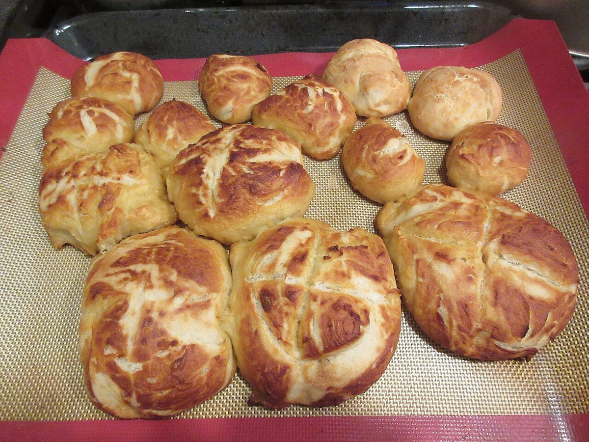
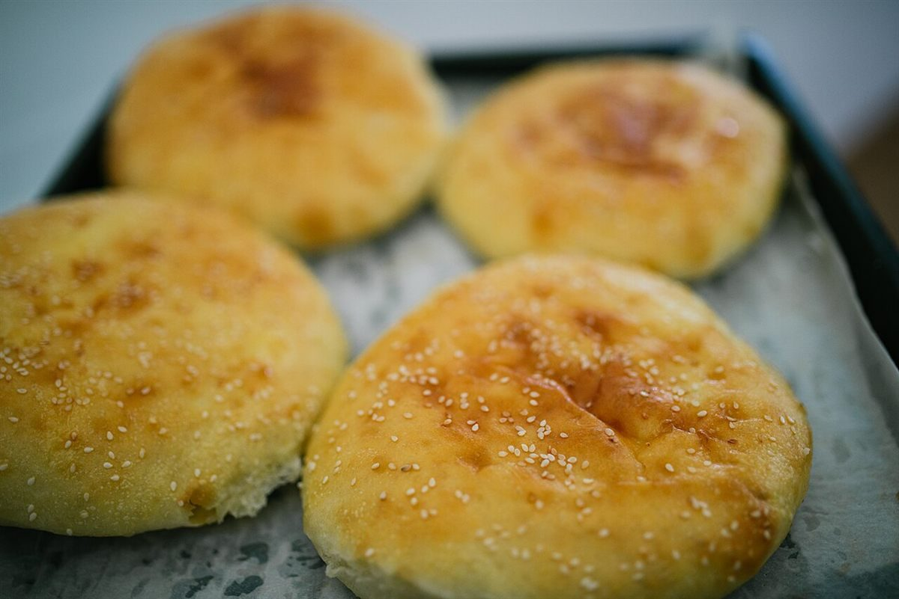
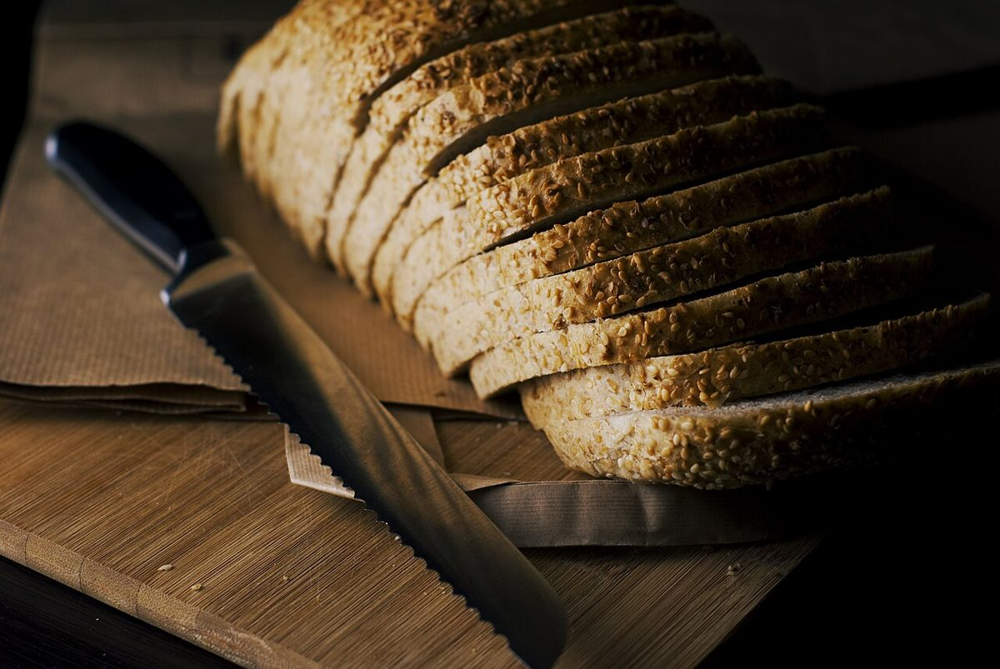

3 / 5 パ
メニュー
メニューと価格は準備中です。分かり次第、こちらに載せます。
チョーク書きの掲示板(準備中)
- 商品準備中
- 価格準備中
- ご予約準備中
- 営業時間準備中
- 定休日準備中
お店で扱う商品・価格は確認できていないため、何も書いていません。
パンの写真イメージ
下の写真はフリー素材のイメージです。Haru Panの商品ではなく、お店で提供しているものを示すものでもありません。






3 / 5 パ
メニューと価格は準備中です。分かり次第、こちらに載せます。
お店で扱う商品・価格は確認できていないため、何も書いていません。
下の写真はフリー素材のイメージです。Haru Panの商品ではなく、お店で提供しているものを示すものでもありません。


